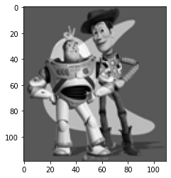
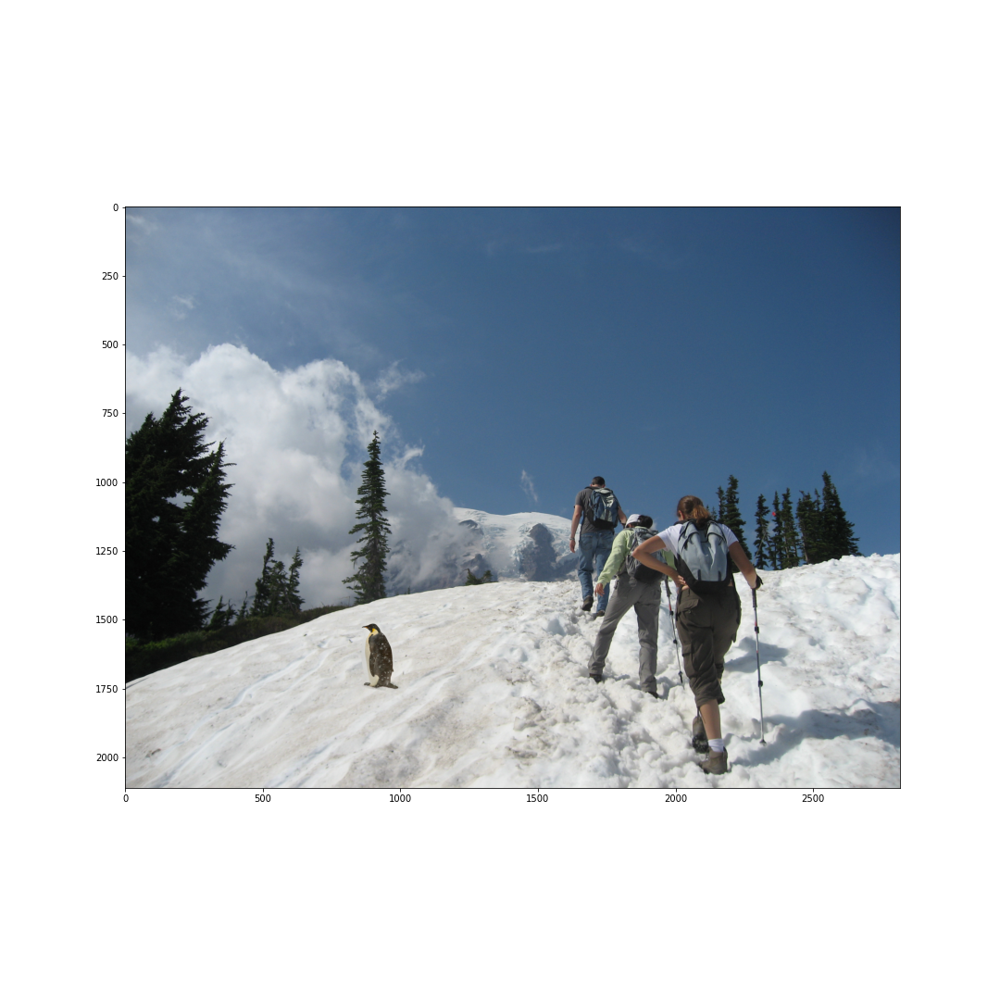

I used the provided starter code from https://courses.engr.illinois.edu/cs445/fa2023/projects/gradient/ComputationalPhotography_ProjectGradient.html
In this toy example, we practice reconstructing an image based on its gradients, as well as a starting pixel intensity (kind of like a diffeq). The goal is to find a $v$ that minimizes the sum of the following functions: $\sum ([v(x+1,y) - v(x,y)] - [s(x+1, y) - s(x, y)])^2$ to match the x-gradients, $\sum ([v(x,y+1) - v(x,y)] - [s(x, y+1) - s(x, y)])^2$ to match the y-gradients, and $(v(0,0) - s(0,0))^2$ to set the initial pixel intensity. As the spec suggested, the implementation was set up to introduce a row in a sparse matrix A for every term in the combined summation, and solve the v parameters (aka reconstructed image) via least squares.
The toy example was successfully reconstructed.
In this section, we implmented Poisson Blending. The implementation was somewhat similar to the previous section, except we instead set up equations for only the pixels that were inside of the mask. For every point $i$ in the mask, we either looked at $((v_i - v_j) - (s_i - s_j))^2$ or $((v_i - t_j) - (s_i - s_j))^2$ depending on whether $j$ (a neighbor of $i$) was inside the mask or not. The most important thing was to make sure to use a sparse matrix, since that is extremely efficient for both time and memory for a task like this.
The object selection region points and the corresponding region.
The naive (simple insertion) vs Poisson blending results. As you can see, the Poisson blending makes the blending a lot smoother.
Another example of Poisson Blending.
In this section, we implmented Mixed Gradients, which was pretty much the exact same function as before, except that instead of having an $(s_i - s_j)$ term, it was replaced by a $max([s_i - s_j, t_i - t_j], key = abs)$ term.
The naive vs Mixed Gradients Poisson blending results. The cal logo is blending into the fur of the cat pretty well.